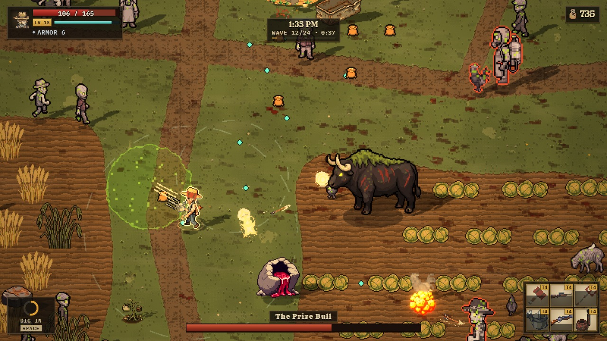
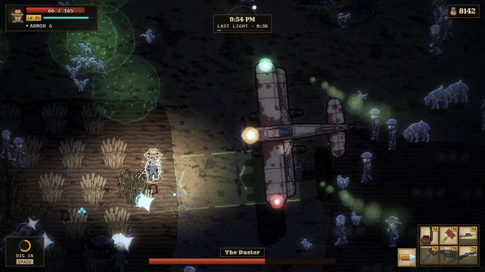
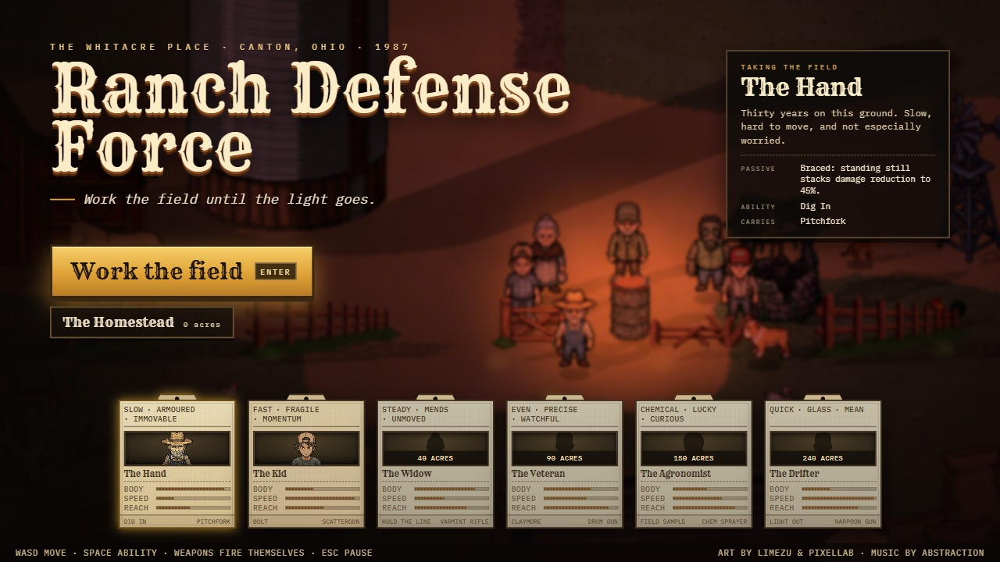
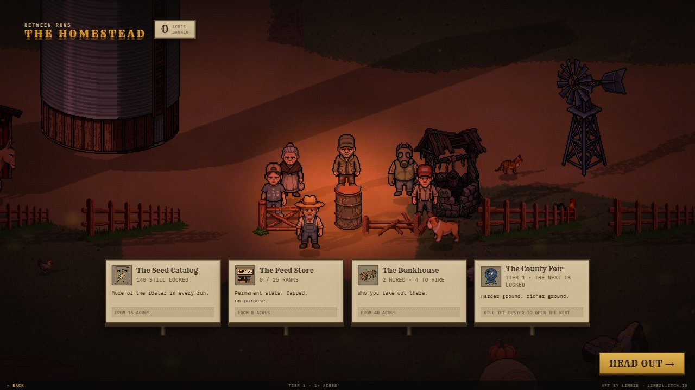

In development: playable in your browser
The Whitacre place, outside Canton, Ohio, 1987
Ranch Defense Force
Pixel-art bullet-heaven on a cursed Ohio farm: work the field from first light to full dark, one day per run.
WASD or arrows to move. Your weapons fire on their own. Space for the class ability.
6:30 AM · Wave 1
First light
A crop duster went over low on Tuesday, and whatever it sprayed turned the hands, the neighbours and the stock into cursed, shambling things. You are the last one on the property with a job to do.
A run is one day. Wave 1 starts at first light with one farmhand, a pitchfork and a few hens that are not quite right.
4:20 PM · Wave 16
The crowd grows with the day
Enemies step on from just past the edge of the screen, all the way round you, and there are more of them every wave. Seeds drop and level you up; each level deals a hand of cards.
Feed buys from the shop after waves 5, 10, 15, 20 and 24. Weapons merge up through tiers as you pick your cards. The light is the clock, and the clock is the difficulty.
Every third wave
Something big comes out of the field
The Cockerel at wave 6, the Thing in the North Pasture at 9, the Prize Bull at 12, the Sow at 15, the Combine at 18, the Spray Rig at 21. At the end of the day the Duster comes over low with its lamps on: the crop duster itself, with nobody flying it.


8:20 PM · Wave 22
Full dark
By the end the sun is gone and you are fighting by lantern light in the rain, with eyes shining in the corn. Outside the lantern the field is near-dark, but the turned still carry a moonlit rim and glowing eyes, so you can read what is killing you.
A couple of hundred of them were alive on the field when this clip was cut.
Between runs
The Homestead
Six classes, each on a different axis: the Hand anchors, the Kid runs, and so on. Four of them unlock at the Homestead, paid for with the acres a run earns. The title screen and the Homestead are the game's own renderer too: the farm at sundown, live.


How it was made
A farm, a day, and a lot of light
No engine
TypeScript, Vite and a hand-written WebGL2 renderer. The world is drawn at the art's own resolution, one art pixel to one texel, and scaled to the screen once with a sharp filter, so every sprite shares one pixel density and the camera glides without crawling.
Light is the clock
A colour buffer, an emissive buffer, a light buffer and a shadow mask are composited every frame. Sun shadows are the sprites themselves, projected along the sun from their feet. The whole day is one keyframed curve in a content file. Birds, wind, crickets, an owl and thunder are synthesised in code and follow the hour.
Photograph, critique, fix
A photo tour boots the real game, plays it with a bot and photographs fixed moments. A fresh reviewer who sees only the photos and the pitch lists the worst problems, they get fixed, and the loop repeats. It has run for more than twenty rounds. The baseline review scored the earlier version 4 out of 10.
Bugs that taught something
Every tilled plot once read as camouflage because the layout mask used an unsigned distance, so half of each plot flipped back to grass at the edges. The day looked flat for ten rounds of colour grading because the lantern's highlight curve was also easing the sun. Both are written up in the repo's notes.
Art
Characters, animals, buildings and items are generated with PixelLab and cut into 8-direction clips; the farm tiles and interface pieces are LimeZu's packs. The sim underneath is fixed-step and deterministic, with bot pilots and a test suite that plays whole runs.
These clips
Recorded by a script, frame by frame, from the live game: the game's own bot pilots the farmhand, the sim steps one frame at a time and a screenshot is taken each step. On late waves the bot's health is topped up so it survives the camera. Nobody played by hand.
Credits and licences
- Pixel-art packs: Modern Farm and Modern User Interface
- By LimeZu, used and published with LimeZu's permission for this repository only. Not MIT; please do not lift the art from this project.
- Character, animal, building and item art
- Generated with PixelLab.
- Music: Abstraction
- From the Music Loop Bundle by Benjamin Burnes / Tallbeard Studios. CC0.
- Sound effects
- Generated with ElevenLabs; the ambience is synthesised in code.
- Typefaces on this page
- Rye by Sorkin Type and IBM Plex Mono by IBM, both under the SIL Open Font License 1.1 (Rye, IBM Plex Mono).
- Code
- MIT. See the repository.